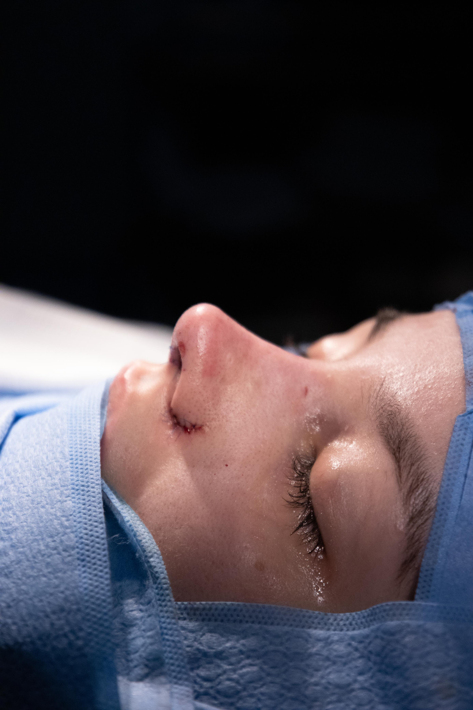

Resultados que respeitam cada rosto.
Casos reais de refinamento, harmonia e naturalidade, respeitando a anatomia e a evolução de cada paciente.

Perfil mais harmônico
Esse é meu caso →
Refinamento com naturalidade
Esse é meu caso →
Harmonia facial
Esse é meu caso →
Proporção e beleza
Esse é meu caso →Detalhes em movimento
Esse é meu caso →Resultados individuais. A evolução varia de acordo com cada paciente e depende de avaliação médica.